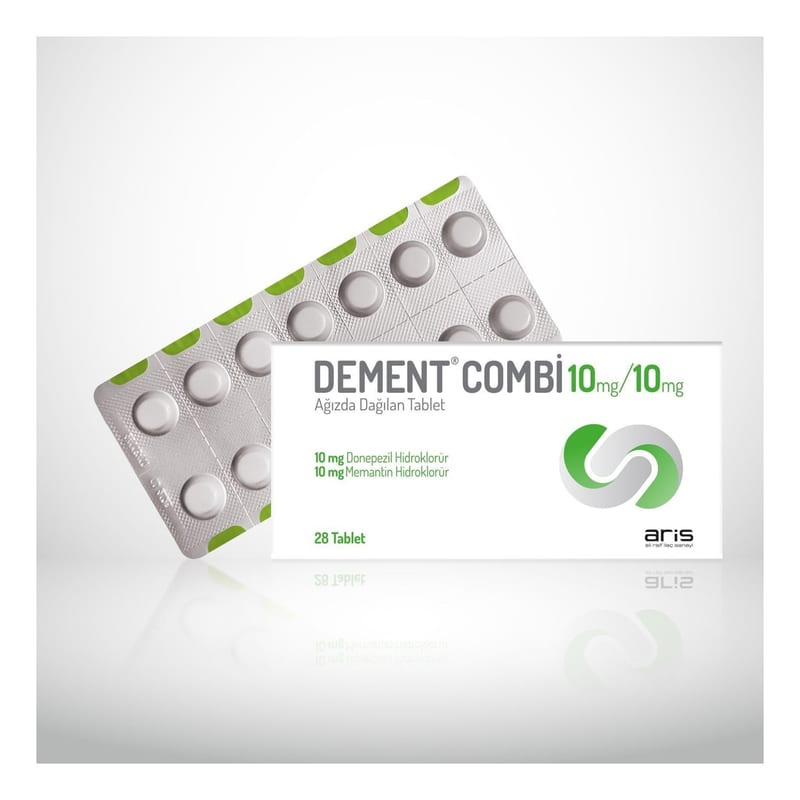

Dement Combi 10 mg / 10 mg Ağızda Dağılan Tablet, 7 Tablet

Ne için kullanılır
KT · Bölüm 1• DEMENT®COMBİ, 10 mg donepezil hidroklorür ve 10 mg memantin hidroklorür içeren beyaz, düz, yuvarlak ağızda dağılan tabletlerdir. • DEMENT®COMBİ, 7 veya 28 tablet içeren Al/Al ambalajlarda piyasaya sunulmaktadır. • DEMENT®COMBİ piperidin tipi geri dönüşümlü asetilkolinesteraz inhibitörü olan donepezil ve NMDA reseptör antagonistleri denilen bir ilaç grubuna dahil olan memantinin kombinasyonudur. • Alzheimer hastalığı (beyne giden mesaj sinyallerinde bozukluk olmasından dolayı hafıza kaybı) belirtileri hafıza kaybı, zihin karışıklığı ve davranış değişiklikleri artışını içermektedir. Sonuç olarak, Alzheimer hastalarının normal günlük aktivitelerini devam ettirmede zorlandıkları görülmüştür. DEMENT®COMBİ orta ve şiddetli evredeki Alzheimer hastalarında bellek bozukluklarının tedavisi için kullanılan bir ilaçtır. • DEMENT®COMBİ’yi yalnızca yetişkin hastalar kullanabilir.